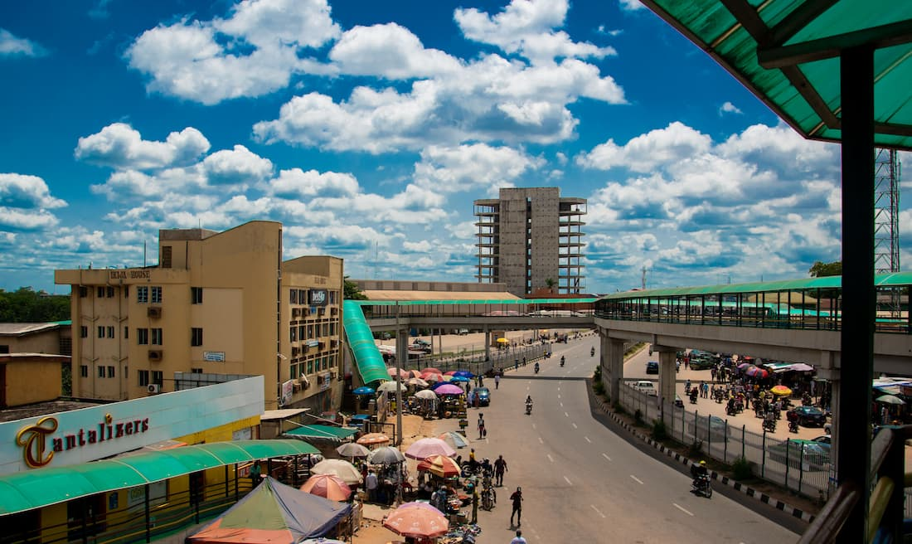

Babalola Akeem
About Me
I am Babalola Akeem from Nigeria. I am learning web development and building my skills in HTML, CSS, and JavaScript. I look forward to creating useful and creative websites as I continue my studies.
Nigeria

Nigeria is a diverse country in West Africa, known for its rich cultures, traditions, and many languages. It is home to beautiful places and friendly communities. I am proud to call Nigeria my country.